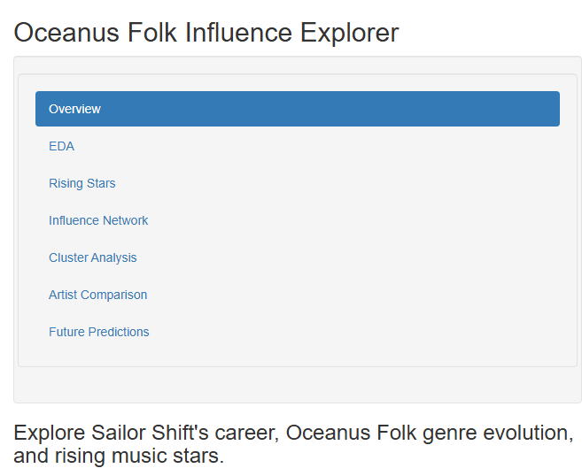

Show the code
# --- Load Required Libraries ---
library(shiny)
library(tidyverse)
library(jsonlite)
library(janitor)
library(lubridate)
library(tidygraph)
library(igraph)
library(ggraph)
library(DT)
library(plotly)
library(visNetwork)
library(factoextra)
library(FactoMineR)
library(fmsb)
library(forcats)
# --- Data Preprocessing ---
# Load and clean nodes and edges from JSON
kg <- fromJSON("data/MC1_graph.json")
nodes_tbl <- as_tibble(kg$nodes) %>% clean_names()
edges_tbl <- as_tibble(kg$links) %>% clean_names()
# Create ID mapping for node and edge references
nodes_tbl <- nodes_tbl %>% mutate(release_date = as.integer(release_date))
id_map <- tibble(id = nodes_tbl$id, index = seq_len(nrow(nodes_tbl)))
edges_tbl_mapped <- edges_tbl %>%
left_join(id_map, by = c("source" = "id")) %>% rename(from = index) %>%
left_join(id_map, by = c("target" = "id")) %>% rename(to = index) %>%
filter(!is.na(from), !is.na(to))
nodes_tbl_clean <- nodes_tbl %>% mutate(id = as.integer(id)) %>% distinct()
# Build graph object
graph <- tbl_graph(nodes = nodes_tbl_clean, edges = edges_tbl_mapped, directed = TRUE)
# --- Derive Artist and Work Tables ---
people <- nodes_tbl_clean %>% filter(node_type == "Person") %>% select(person_id = id, name)
songs_albums <- nodes_tbl_clean %>%
filter(node_type %in% c("Song", "Album")) %>%
select(work_id = id, any_of(c("release_date", "genre", "notable")))
# Contribution and collaboration extraction
contribution_types <- c("ComposerOf", "PerformerOf", "ProducerOf", "LyricistOf", "RecordedBy")
collab_types <- c("LyricalReferenceTo", "CoverOf", "InterpolatesFrom", "DirectlySamples")
created_links <- edges_tbl_mapped %>%
filter(edge_type %in% contribution_types)
# Artist work profile
artist_works <- created_links %>%
left_join(id_map, by = c("from" = "index")) %>% rename(person_id = id) %>%
left_join(id_map, by = c("to" = "index")) %>% rename(work_id = id) %>%
left_join(songs_albums, by = "work_id")
rising_star_profile <- artist_works %>%
group_by(person_id) %>%
summarise(
total_works = n(),
notable_works = sum(notable, na.rm = TRUE),
oceanus_folk_works = sum(genre == "Oceanus Folk", na.rm = TRUE),
first_release = min(release_date, na.rm = TRUE),
first_notable = min(release_date[notable == TRUE], na.rm = TRUE),
.groups = "drop"
) %>%
mutate(
time_to_notability = ifelse(!is.na(first_notable), first_notable - first_release, NA)
)
# Add collaboration counts
collaborations <- edges_tbl_mapped %>%
filter(edge_type %in% collab_types) %>%
count(from, name = "collaborations") %>%
left_join(id_map, by = c("from" = "index")) %>%
rename(person_id = id)
rising_star_profile <- rising_star_profile %>%
left_join(collaborations, by = "person_id") %>%
mutate(collaborations = replace_na(collaborations, 0)) %>%
inner_join(people, by = "person_id")
# --- UI ---
ui <- fluidPage(
titlePanel("Oceanus Folk Influence Explorer"),
sidebarLayout(
sidebarPanel(
width = 2,
navlistPanel(
id = "main_tabs",
widths = c(12, 12),
tabPanel("Overview"),
tabPanel("EDA"),
tabPanel("Rising Stars"),
tabPanel("Influence Network"),
tabPanel("Cluster Analysis"),
tabPanel("Artist Comparison"),
tabPanel("Future Predictions")
),
conditionalPanel(
condition = "input.main_tabs == 'EDA'",
sliderInput("year_range", "Select Year Range:",
min = min(nodes_tbl$release_date, na.rm = TRUE),
max = max(nodes_tbl$release_date, na.rm = TRUE),
value = c(2000, 2040)),
selectInput("genre_select", "Select Genres:",
choices = sort(unique(na.omit(nodes_tbl$genre))),
selected = NULL, multiple = TRUE)
)
),
mainPanel(uiOutput("subtabs_ui"))
)
)
# --- Server ---
server <- function(input, output, session) {
output$subtabs_ui <- renderUI({
switch(input$main_tabs,
"Overview" = h3("Explore Sailor Shift's career, Oceanus Folk genre evolution, and rising music stars."),
"EDA" = tabsetPanel(
tabPanel("Edge Types", plotOutput("edgeTypePlot")),
tabPanel("Node Types", plotOutput("nodeTypePlot")),
tabPanel("Genre Trends", plotlyOutput("genreHeatmap")),
tabPanel("Notable Songs", plotOutput("notableSongsPlot"))
),
"Rising Stars" = DT::dataTableOutput("risingStarTable"),
"Influence Network" = visNetworkOutput("influenceNetwork", height = "700px"),
"Cluster Analysis" = tagList(
plotOutput("elbowPlot"),
plotlyOutput("pcaPlot"),
DT::dataTableOutput("clusterSummary")
),
"Artist Comparison" = tagList(
DT::dataTableOutput("artistComparisonTable"),
plotOutput("timelinePlot"),
visNetworkOutput("egoNetwork", height = "600px")
),
"Future Predictions" = tagList(
DT::dataTableOutput("futureStarsTable"),
plotOutput("radar1"),
plotOutput("radar2"),
plotOutput("radar3")
)
)
})
# Sample plot render functions
output$edgeTypePlot <- renderPlot({
ggplot(edges_tbl_mapped, aes(y = edge_type)) +
geom_bar() +
labs(title = "Distribution of Edge Types", y = "Edge Type", x = "Count") +
theme_minimal()
})
output$nodeTypePlot <- renderPlot({
ggplot(nodes_tbl_clean, aes(y = node_type)) +
geom_bar() +
labs(title = "Distribution of Node Types", y = "Node Type", x = "Count") +
theme_minimal()
})
output$genreHeatmap <- renderPlotly({ ... }) # Skipped for brevity
output$notableSongsPlot <- renderPlot({ ... }) # Skipped for brevity
output$risingStarTable <- DT::renderDataTable({ rising_star_profile })
}
# --- Launch App ---
shinyApp(ui = ui, server = server)